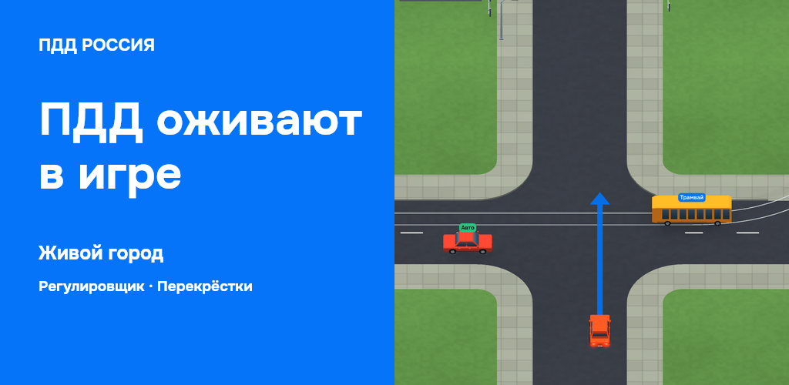

Сначала игры. Затем вся подготовка.
Живой город → регулировщик → перекрёсток. Дальше — билеты, экзамен, справочники, лента с озвучкой и прогресс. Восемь карточек в одном порядке для Google Play и RuStore.
Скачать комплектИсточники и размерыПервые три крупно
App Store: iPhone и iPad
Обложка Google Play

Игры сняты из текущих исходников Godot. Экраны обучения — реальные Flutter-кадры; лента отрендерена текущим компонентом с вопросом из контента. Настольный рендер не заменяет проверку финальной Android-сборки. Готово к обсуждению, на модерацию не отправлено.